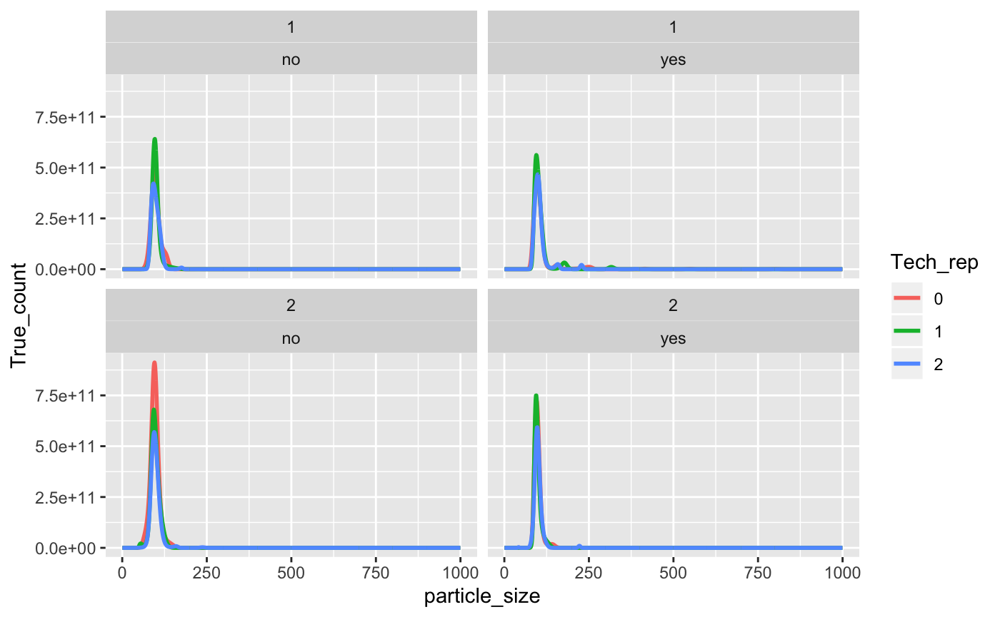
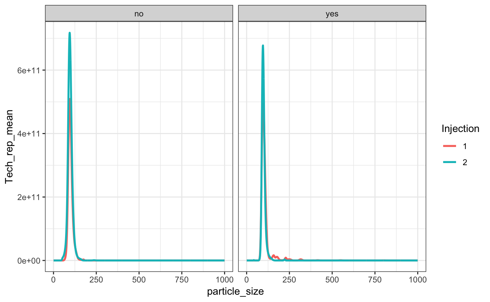
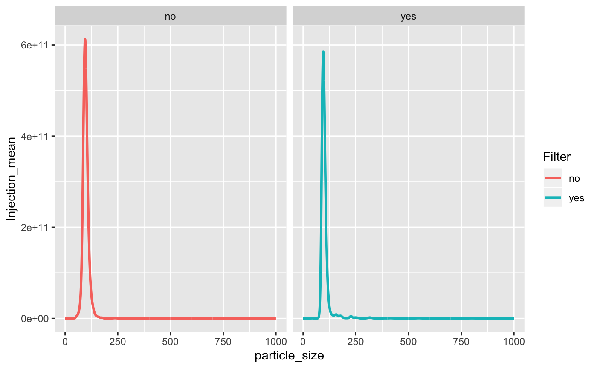

tidyNano.RmdtidyNano is a package that imports raw Nanosight data and faciliates the process of tidying the data so it is suitable for visualizing with ggplot2 and data manipulation with dplyr. tidyNano also has functions to facilitate the rapid generation of summary statistics by groups to assist with calculating technical replicate and within group mean, standard deviation, and standard error.
library(tidyNano)
library(tidyverse)This is an example raw Nanosight .csv output file and is not easily imported with read.csv()
file <- system.file("extdata", "beads.csv", package = "tidyNano")
read.csv(file) %>% head()
#> NTA.Experiment.Summary.File X X.1 X.2 X.3 X.4
#> 1 Created with NTA 3.2 Dev Build 3.2.16
#> 2
#> 3 [Experiment Details]
#> 4 Software Version Unknown
#> 5 Experiment Name std_combined.nano
#> 6 Sample Name
#> X.5 X.6 X.7 X.8 X.9 X.10 X.11 X.12 X.13
#> 1
#> 2
#> 3
#> 4
#> 5
#> 6nanoimport is a function that extracts the particle data from raw a nanosight .csv file and creates a dataframe that is suitable for cleaning within R.
data <- nanoimport(file)
#> NTA version: 3.2
#> Sample name:
#> Number of parameters detected: 1
#> Dilution factor detected: 1
#> Auto name = FALSE
#> Custom name: NULL
#> Dilution value: 1 (Didn't parse)
head(data)
#> particle_size std_10000_yes_2_00 std_10000_yes_2_01 std_10000_yes_2_02
#> 1 0.5 0 0 0
#> 2 1.5 0 0 0
#> 3 2.5 0 0 0
#> 4 3.5 0 0 0
#> 5 4.5 0 0 0
#> 6 5.5 0 0 0
#> std_10000_no_2_00 std_10000_no_2_01 std_10000_no_2_02 std_10000_yes_1_00
#> 1 0 0 0 0
#> 2 0 0 0 0
#> 3 0 0 0 0
#> 4 0 0 0 0
#> 5 0 0 0 0
#> 6 0 0 0 0
#> std_10000_yes_1_01 std_10000_yes_1_02 std_10000_no_1_00
#> 1 0 0 0
#> 2 0 0 0
#> 3 0 0 0
#> 4 0 0 0
#> 5 0 0 0
#> 6 0 0 0
#> std_10000_no_1_01 std_10000_no_1_02
#> 1 0 0
#> 2 0 0
#> 3 0 0
#> 4 0 0
#> 5 0 0
#> 6 0 0nanotidy is a function that facilitates the conversion of a dataframe to make it tidy for easy data visualization with ggplot2 and data manipulation with dplyr.
tidy_data <- nanoimport(file) %>%
nanotidy( sep_var = c("Sample", "Dilution","Filter",
"Injection","Tech_rep"))
#> NTA version: 3.2
#> Sample name:
#> Number of parameters detected: 1
#> Dilution factor detected: 1
#> Auto name = FALSE
#> Custom name: NULL
#> Dilution value: 1 (Didn't parse)
head(tidy_data)
#> particle_size Sample Dilution Filter Injection Tech_rep Count True_count
#> 1 0.5 std 10000 yes 2 0 0 0
#> 2 1.5 std 10000 yes 2 0 0 0
#> 3 2.5 std 10000 yes 2 0 0 0
#> 4 3.5 std 10000 yes 2 0 0 0
#> 5 4.5 std 10000 yes 2 0 0 0
#> 6 5.5 std 10000 yes 2 0 0 0Once the data is in the tidy format it can be easily visualized using existing libraries such as ggplot2.
tidy_data %>%
ggplot(aes(x = particle_size, y = True_count, color = Tech_rep)) +
geom_line(size = 1) +
facet_wrap(Injection ~ Filter)
nanolyze is a function that is able to quickly summarize data by groups. The first argument is the number of variables to group by. The second argument name is the prefix that is added to the mean, sd and se summary, the default name is “Param”. The third argument is param_var which is the numeric variable that is to be summarized. The output of this function is a dataframe of the grouped variables, column N with number of values that were summarized, column mean for the mean, column sd for standard deviation, and column se for standard error of the mean. Here we see that the technical replicates will be averaged.
Tech_avg_data <- tidy_data %>%
nanolyze(particle_size, Sample, Dilution, Filter, Injection,
name = "Tech_rep",
param_var = True_count)
head(Tech_avg_data)
#> # A tibble: 6 x 9
#> # Groups: particle_size, Sample, Dilution, Filter [3]
#> particle_size Sample Dilution Filter Injection Tech_rep_N Tech_rep_mean
#> <dbl> <fct> <dbl> <fct> <fct> <int> <dbl>
#> 1 0.5 std 10000 no 1 3 0
#> 2 0.5 std 10000 no 2 3 0
#> 3 0.5 std 10000 yes 1 3 0
#> 4 0.5 std 10000 yes 2 3 0
#> 5 1.5 std 10000 no 1 3 0
#> 6 1.5 std 10000 no 2 3 0
#> # ... with 2 more variables: Tech_rep_sd <dbl>, Tech_rep_se <dbl>The technical average data can be visualized with ggpplot2.
Tech_avg_data %>%
ggplot(aes(x = particle_size, y = Tech_rep_mean, color = Injection)) +
geom_line( size = 1) +
facet_wrap(~ Filter) + theme_bw()
In this experiment, a sample was read twice by the Nanosight and thus we can average the means by Injection to obtain a single mean value by using the nanolyze function again. Notice the different use of the name and param_var arguments.
Injection_avg_data <- Tech_avg_data %>%
nanolyze(particle_size, Sample, Dilution, Filter,
name = "Injection",
param_var = Tech_rep_mean)
head(Injection_avg_data)
#> # A tibble: 6 x 8
#> # Groups: particle_size, Sample, Dilution [3]
#> particle_size Sample Dilution Filter Injection_N Injection_mean
#> <dbl> <fct> <dbl> <fct> <int> <dbl>
#> 1 0.5 std 10000 no 2 0
#> 2 0.5 std 10000 yes 2 0
#> 3 1.5 std 10000 no 2 0
#> 4 1.5 std 10000 yes 2 0
#> 5 2.5 std 10000 no 2 0
#> 6 2.5 std 10000 yes 2 0
#> # ... with 2 more variables: Injection_sd <dbl>, Injection_se <dbl>We can again use ggplot2 to visualize the mean injection data.
Injection_avg_data %>%
ggplot(aes(x = particle_size, y = Injection_mean, color = Filter)) +
geom_line( size = 1) +
facet_wrap(~Filter)
We can also use dplyr to filter on values less than 300nm easily.
Injection_avg_data %>%
filter(particle_size <300) %>%
ggplot(aes(x = particle_size, y = Injection_mean, color = Filter)) +
geom_line( size = 1) +
facet_wrap(~Filter) MY FIGURE CAPTION
nanocount is a function that is able to calculate the total sum of particles by group.
Injection_avg_data %>%
nanocount(Sample, Dilution, Filter,
param_var = Injection_mean)
#> # A tibble: 2 x 5
#> # Groups: Sample, Dilution [?]
#> Sample Dilution Filter Particle_N Particle_count
#> <fct> <dbl> <fct> <int> <dbl>
#> 1 std 10000 no 1000 1.64e13
#> 2 std 10000 yes 1000 1.29e13We can also use dplyr verbs before nanocount. To calculate the total number of particles less than 100nm the filter command can be used.
Injection_avg_data %>%
filter(particle_size < 100) %>%
nanocount(Sample, Dilution, Filter,
param_var = Injection_mean)
#> # A tibble: 2 x 5
#> # Groups: Sample, Dilution [?]
#> Sample Dilution Filter Particle_N Particle_count
#> <fct> <dbl> <fct> <int> <dbl>
#> 1 std 10000 no 100 1.02e13
#> 2 std 10000 yes 100 7.55e12